These two types of automations can be created with RPA Desktop Design Studio and run them with Unattended Robot or Attended Robot:
The goal of this exercise is to automate a repetitive, error-prone process that involves manually entering in data into a legacy HR system. Because this application does not have APIs, RPA can be utilized to automate through the user interface (UI) of the application. This exercise will show how to create an unattended robot package in the RPA Desktop Design Studio. It will teach how to retrieve the pending work queue item in the RPA Hub Queue (extracted data from DocIntel) and parse the JSON content. Additionally, it will show how to use the Windows connector to interact with the UI of a .Net application. Finally, the lab will show how to use the Invoke SubFlow component to trigger a SubFlow on the ServiceNow instance.
Before opening RPA Desktop Design Studio, let's look at RPA Hub and some of the core components.
A Windows Virtual Machine (VM) will be needed to complete this lab. The IP address and login credentials were provided when registering for the lab. If using a Mac laptop, the Microsoft Remote Desktop App should have already been installed as a pre-requisite to this lab.
The goal of this exercise is to design an automation that enters data into a legacy .NET application. The completed package utilizes the RPA Queue and the Windows Connector to automate through the user interface of the application.
Open RPA Desktop Design Studio.
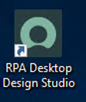
Before opening RPA Desktop Design Studio, connection will need to be made to the ServiceNow instance. In the Connection Manager window, enter Lab Instance under Name (1) and enter the instance URL under URL (2). Then click Launch in default browser (3) and click Save (4).
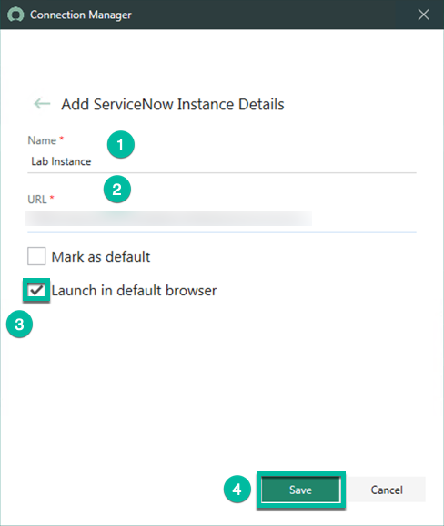
The instance URL is provided on the registration page.
After clicking Save, the RPA Desktop Design Studio finishes installing.
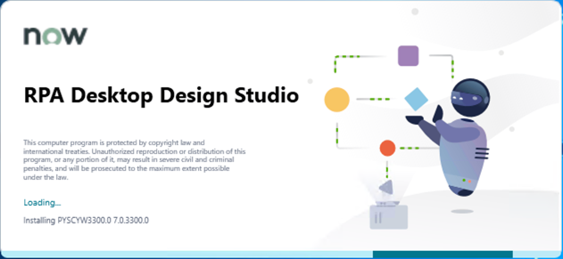
This will take some time, but only needs to be completed the first time RPA Desktop Design Studio is opened.
Wait for RPA Desktop Design Studio to open and then click Unattended Automation.
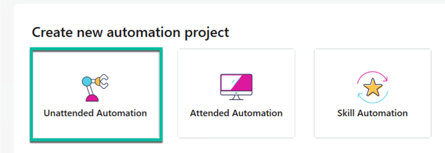
Enter the Name (1) and Description (2) and click OK (3).
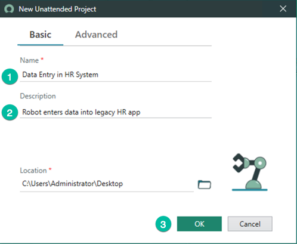
Now, let's look at the RPA Desktop Design Studio. Below are the key sections and their purposes.
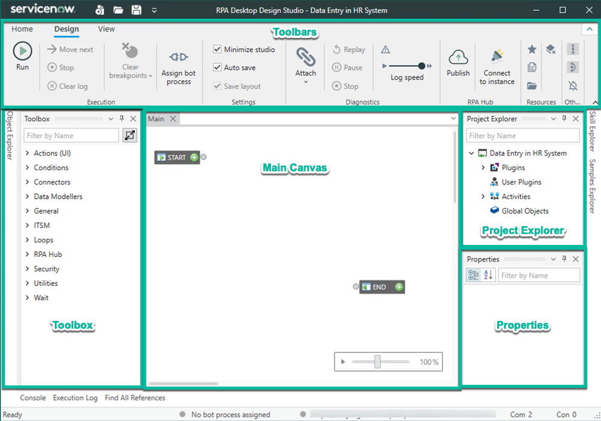
| Section |
Purpose |
| Toolbars |
Provides access to important functionalities like Run, Debug, or upload packages to RPA Hub. |
| Toolbox |
Provides access to components to build an automation. Components are bespoke actions like opening or closing a file, starting or stopping an application, and much more. |
| Main Canvas |
The canvas shows a workflow like diagram which is used to connect components to a sequence. It allows to define the process steps as well as data flows from one component to another component. |
| Project Explorer |
This section is used for management of installed plugins, activities, and global objects. |
| Properties |
Used to configure the properties of components, connectors, activities, and global objects. |
Because the PayDay application is a .Net app, the Windows Connector is the appropriate connector to use. It can detect the windows, elements, and properties of .Net applications. Navigate to the Toolbox Search bar and type Windows. Then click the Windows Connector and drag and drop it onto Global Objects.
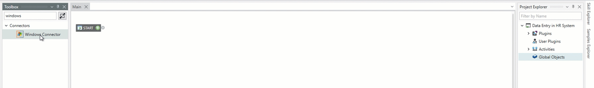
All connectors must be added to the Global Objects section before they can be used.
Under Global Objects in the Project Explorer, double Click the newly added Windows Connector.
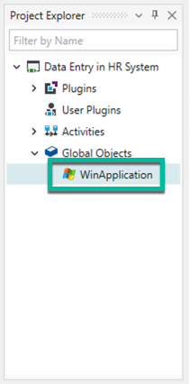
In the Properties section, directly under the Project Explorer, edit the name field so that it says PayDay App and then press Enter.
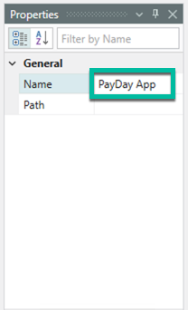
Next, double click the PayDay App in the Project Explorer and navigate to the Toolbox on the left side of the screen. Because a global object has been selected, the Toolbox has been replaced with the Object Explorer, which shows methods specific to that object. In this case, the methods are related to .Net applications. Drag and drop the method that says Start onto the canvas.
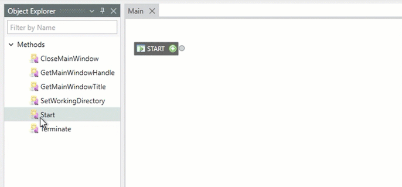
To connect this step to the previous step of the process, simply drag the gray Control Out port from the Start Component to the Control In port of the PayDay App component. These arrows tell the robot which steps to follow, in which order.
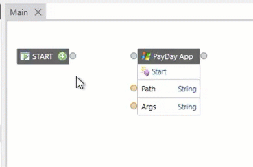
The orange ports on the left side of the component indicate that the system is expecting input data to complete this step. In this case, it needs the path of the application that it is opening. Any orange ports on the right side of the component indicate the output of that step of the process. Double click on Path and type C:\SupplementalMaterials\ACME PayDay 2001 v.60.exe, which is the path of the installed application. Then press Enter.
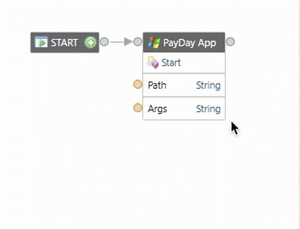
To test this step, click Run on the left side of the Toolbar. This opens the PayDay app.
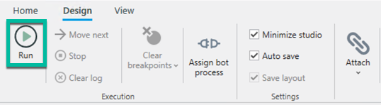
Minimize this app because it will be needed later when configuring the Windows Connector.
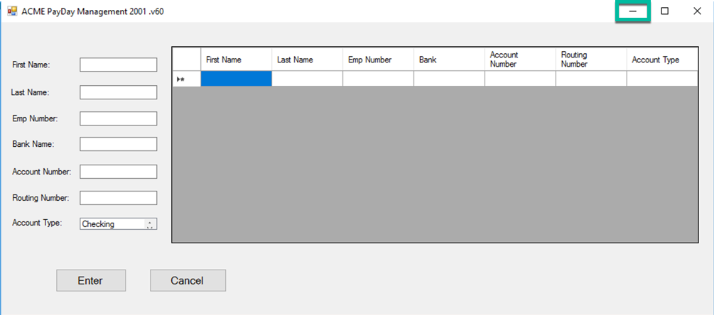
The next step of the process is to retrieve the pending work items from the queue on RPA Hub. To use the Queue connector, click Toolbox on the bottom left of the screen.
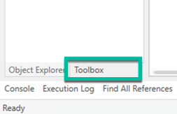
Next, search Queue in the Search Bar.
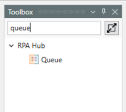
Queue is another connector, so it must first be dragged and dropped onto the Global Objects section before it can be used.
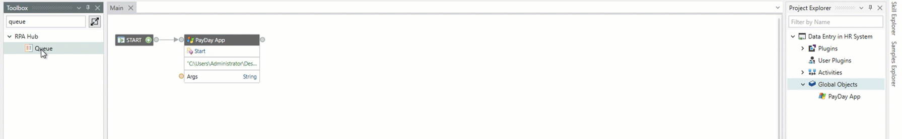
As done previously with the Windows Connector, double click on the Queue object in the Project Explorer to change its properties.
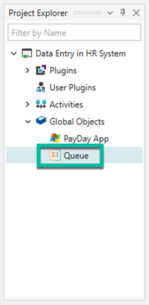
Under the Properties section, leave the Name field as Queue. In the Queue Name field, type Direct Deposit and then press Enter. This is the name of the queue on RPA Hub and is required to tell the robot which queue to interact with.
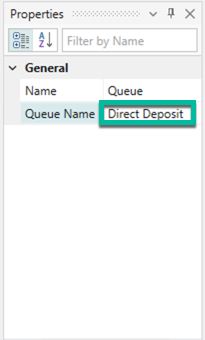
Because the robot is accessing a queue on a ServiceNow instance, it must also be told which instance and bot process to connect to. This can be done by clicking Assign Bot Process in the Toolbar.
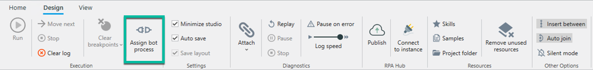
In the Connection Manager window, click Connect to connect to the lab instance provided during registration.
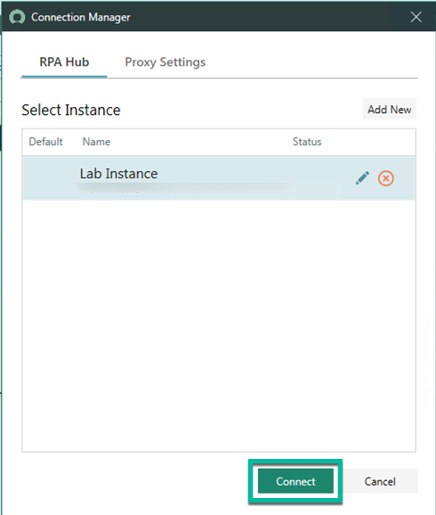
This opens a ServiceNow login page in Chrome. Type the instance username (1) and password (2) and click Log in.
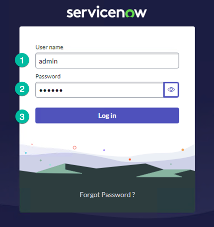
These credentials are provided on the registration page.
To confirm connectivity, click Allow on the following screen.
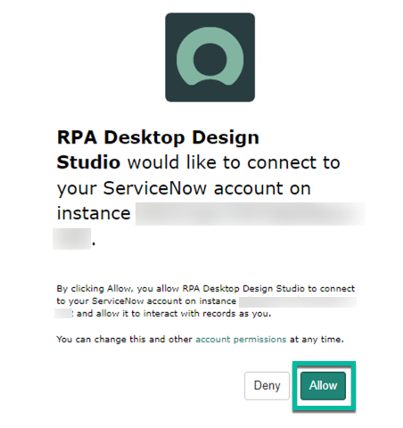
Click Open UTL.RPA.HOST to open the UTL.RPA.HOST application.
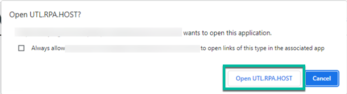
Now that connectivity to the instance has been established, select Data Entry in Legacy HR System as the Bot Process (1) and MyRobot as the Robot (2). Then click OK (3).
Once the instance is connected, there will be green markers at the bottom of RPA Desktop Design Studio indicating what bot process has been assigned (1) and what instance it is connected to (2).
Double Click Queue under Global Objects to view the methods related to Queue.
Click PickWorkItem and drag and drop it onto the canvas, on the right of the previous step. Then connect the Control out port of the PayDay App step to the Control In port of the PickWorkItem step.
To change the step so that only Pending work items are selected, double click on the Status input field.
Click Static to change how the status field is determined. Static means that it is not dynamic and will not change based on any conditions.
Next, click the drop-down menu and select Pending. Then click OK.
Click on Settings at the top of the PickWorkItem step. This is indicated by a gear icon.
The settings can also be changed by double clicking on the gray title bar at the top of the step.
The response from the Queue will be in JSON format but this can easily be parsed by the robot using the JSON Properties section. Double click on JSON properties to configure the key-value pairs.
First, click on the green plus sign 8 times because there are 8 values being passed to the robot in the Request Content (1). Next, enter the JSON Path Notations as seen below so the robot can retrieve the corresponding values (2). Then click OK (3). The spelling needs to be exactly as shown in the image below because this is how the properties are spelled in the JSON content.
| JSON Path Notation Name |
| Firstname |
| Lastname |
| Routing |
| AccountNumber |
| BankName |
| EmployeeNumber |
| AccountType |
| BankRecordSysid |
Now that data is being received by the robot, the next step is to use the Windows Connector to tell the robot where to enter the data. To configure the Windows Connector, right click on PayDay App and click Configure.
Click the drop-down window and check to see which applications are available. The PayDay App is not included because it has not yet been opened.
Minimize the RPA Desktop Design Studio and click on the PayDay App which should have been minimized earlier.
If the PayDay App was closed, it can be found by navigating to the following path: C:\SupplementalMaterials\ACME PayDay 2001 v.60.exe
Now the PayDay App can be selected when clicking on the drop-down window.
If the PayDay App is still not there, try clicking on the green marker on the right side of the drop down to refresh the list.
Click Add Window.
Right click on the added window and click Add Element.
The elements that need to be selected are the ones that the robot will need to interact with. The first one to select is the input field for First Name. To select it, simply hover over the text box until you see a red line highlighting it. Then, without clicking on anything, move your mouse to the name field and type First. The red box should still be highlighting the text box and the Tag field should say edit. If all of this has been done correctly, click on the green plus sign to finish adding the element.
To make it easier to enter the name of the element, try holding down the control key. This prevents the Add Element window from moving.
Next, repeat this step for the text boxes for Last Name, Emp Number, Bank Name, Account Number, and Routing Number. The Names that are entered should match the Name field in the second column of the table below.
| Text Box |
Name |
| First Name |
First |
| Last Name |
Last |
| Emp Number |
Emp |
| Bank Name |
Bank |
| Account Number |
Account Number |
| Routing Number |
Routing Number |
The Account Type element uses a list to allow the user to select a list item. Ensure that the whole list is highlighted, not just the list item. If done correctly, it will say List in the TAG field. If the list item is accidentally selected, it will say list item in the TAG field. If this happens, click the Blue Arrow to the right of the TAG field. This changes the element to its parent element, which in this case is the list. It should now say list in the TAG field. See the second gif for an example of how change to the parent element.
Last, the Enter button needs to be added so the robot can submit the data. Highlight the Enter button, type Enter, and click the green plus symbol. This is the last element that needs to be added, so click the Red X to end the Add Element process.
Check the added elements. They should look like the ones seen below. If everything looks correct, close the Windows Connector window by pressing OK.
In the Project Explorer, double click PayDay App and then double click ACME PayDay Management 2001 .v60. This shows the methods available at the Screen level, rather than at the application level, which was used to open the application.
The methods can be seen in the Object Explorer on the left side of the RPA Desktop Design Studio.
Under Methods, drag SetFields onto the canvas on the right of the Queue step. Then connect the control out and control in ports as shown.
Click the Settings icon and select all the available elements so the robot can enter data into the input fields. Then click OK.
Connect each output port from the previous step to the corresponding input port of the SetFields step. It should look like the screenshot below.
To confirm that that data is mapped correctly, try clicking on each of the orange lines. This highlights the line to show what output data it uses and what input data it is mapped to.
Click Account Type to access the methods available at the element level.
For this element, an item needs to be selected from a list of options. Drag and drop the SelectListItem method onto the canvas and connect the control in and control out ports as shown.
Drag and drop the AccountType output from the Queue step and connect it to the itemText input port of the SelectListItem method.
Click on the Enter element to display the methods available for the Enter button.
Drag and drop the method Click onto the canvas on the right of the previous step and connect the control in an control out ports.
Now that the data has been entered into the application, the queue needs to be told that it was successful, so the work queue item is not processed a second time. This can be done using the UpdateWorkItem method. To view the Queue methods, double click Queue under Global Objects in the Project Explorer.
Drag and drop the UpdateWorkItem method onto the canvas on the right of the previous step and connect the control in and control out ports.
To tell the queue which work item to update, drag and drop the WorkItemId data out port from the PickWorkItem step to the WorkItemId data in port on the UpdateWorkItem step.
Double click the input field that says In Progress.
Click the drop down and select Success. Then click OK.
The last step of the process is to invoke a previously created SubFlow to update the Bank Account record on ServiceNow. This can be done easily using the InvokeSubFlow component. To use this component, first click Toolbox at the bottom left of the RPA Desktop Design Studio.
Type Flow Designer into the search bar to find the components related to Flow Designer.
Drag and drop the InvokeSubFlow component onto the canvas on the right of the previous step and connect the control in and control out ports as shown.
This component requires the internal name of the SubFlow to be entered as data in. Additionally, if the flow requires any inputs it will need to be added here. To see the SubFlow that will need to be triggered by the robot, navigate back to RPA Hub and type Flow Designer (1) into the filter navigator and click Flow Designer (2). This opens Flow Designer in a new tab.
Click Subflows.
Click the SubFlow titled Update HR Sync Field.
If this SubFlow is difficult to find, try changing the search field to Name, typing the name of the SubFlow, and then pressing enter. The SubFlow should show up first in the results.
This is a simple flow that looks up a bank account record and marks the HR Sync checkbox as complete. If checked, it means that the data has been successfully entered into the legacy HR app. Click SubFlow Inputs & Outputs to see if the SubFlow requires any inputs.
This SubFlow is being passed the SysID of the bank account record that needs to be updated. Make note of the name of the input field (1) and then click Done (2). The name is what needs to be entered into the Invoke SubFlow step as data in.
Navigate back to the RPA Desktop Design Studio and double click Name in the InvokeSubFlow step.
Paste ”global.updatehrsync_field” into the name field and press Enter. This value is the internal name of the SubFlow that needs to be invoked. It includes “global.” in front of the internal name to indicate which application scope it is in. The value should be spelled exactly as shown in the image below or the SubFlow will not be triggered.
To pass the input to the SubFlow, click the *Settings Icon above the step or double click on the title of the step that says Flow Designer.
In the resulting window, click the Green Plus Symbol, type sysid, and change the input type to string. Then click OK.
Drag the BankRecordSysid value from the PickWorkItem step and drop it onto the sysid input on the InvokeSubFlow step.
Connect the End Port after the InvokeSubFlow step as shown.
The final automation should look like the image below.
Once complete, the automation can be run by clicking Run on the left side of the Toolbar.
Confirm that the HR Sync was completed by going back to the instance and clicking Favorites (1) and then clicking bank accounts table (2).
There is one record in this table, the bank account that was created for this lab. Click BAN0001032 to open this record.
The HR Sync checkbox is checked to show that the sync is complete. The SubFlow was successfully triggered to change this field.
If the Validated checkbox is not checked, this means that the previous exercise titled IntegrationHub Exercise was not completed.
Congratulations! This concludes the RPA Desktop Design studio portion of the lab. The result is a simple automation that takes input from the RPA Hub Queue and enters the data into a legacy HR application.
Now that the automation is complete, a bot process needs to be created so the bot can be triggered from the ServiceNow instance. This section will cover publishing the package to the instance, creating a robot, and assigning a package and robot to a bot process.
To publish the automation package to the lab instance, click Publish in the Design Studio toolbar.
Make sure the lab instance is selected (1) and click Publish (2).
On the next window, type the provided instance username (1) and password (2) and click Log in.
To confirm connectivity, click Allow on the following screen.
Click Open UTL.RPA.HOST to open the UTL.RPA.HOST application.
A package can either be published as a new package or as a new version to an existing package. Because a Data Entry in HR System package already exists, click New Version (to existing package).
Select Data Entry in HR System as the package name (1), type Lab Package under Comments (2) and click Publish (3).
Click OK.
Navigate back to RPA Hub on the ServiceNow instance. A Bot Process has already been created for this automation, but it does not have the right robot or package assigned to it. First, let's add the lab robot to RPA Hub. On the RPA Hub list view, click Robots.
At the top right side of the page, click New.
Type Lab Robot under Name (1), type the lab VM machine name under Machine Name (2), and click Save (3). The machine name or hostname can be found on the lab VM desktop background. It can also be found by clicking MID Servers in the Favorites list (1) and copying the value for Host name (2), as seen in the second and third images below.

The system creates a robot and assigns it the New state. Next, the Unattended Robot agent needs to be connected from the lab VM. On the lab VM, double click Unattended Robot on the Desktop.
Unattended Robot opens in the Windows System Tray. Click the System Tray arrow (1), right click the Unattended Robot icon (2) and click Settings (3).
Click Basic under Authentication (1). Then type the instance URL under RPA Hub (2), the instance username under Username (3), and the instance password under Password(4). Click Connect (5) to connect to the instance.
If the unattended robot is successfully connected, it will say so on the Unattended Robot window and a notification will appear saying that the robot is connected using basic authentication.
Now, close the Unattended Robot window and navigate back to RPA Hub. The state of the Lab Robot has now been changed to Available.
Now that the robot has been added to RPA Hub, let's modify the Bot Process. Navigate back to the RPA Hub list view and click Bot Process.
Click Data Entry in Legacy HR System to open the Bot Process.
Click Details to select the correct package.
Select Data Entry in HR System under Package (1) and 10002 under Package Version (2).
Click Save.
Click Credential Sets.
Click New.
Type Lab VM Credentials under Name (1), ”Your_Hostname”\Administrator under Windows Username (2), and the lab password under Password (3). Then click Save (4). Make sure to use the hostname of the lab VM for step 2.
Navigate back to the bot process and click Assigned Robots.
Click Add.
In the list of available robots, select Lab Robot (1) and click Add (2).
Click Process Robot Credentials.
Click New.
Select Lab VM Credentials under Credential Set (1) and Lab Robot under Robot (2). Then click Save (3).
Now that the robot and VM credentials have been added to the bot process, the process can be started from the instance. To do this, navigate back to the bot process and click Start Process.
Finally, select Lab Robot (1) and click Start Process (2).
This triggers the Unattended Robot and starts the bot process on the lab VM.
The bot process will not enter data into the application if the work queue item has already been processed and there are no work items in the pending state. To re-run the process, the work queue item needs to be returned to the pending state.
To reassign the work queue item, first click Queues in the RPA Hub list view and open the Direct Deposit queue.
Click Work Queue Items.
Click the BAN0001032 work queue item.
Change the status to Pending (1) and click Save (2). Now the bot process will complete when ran from RPA Hub.
Congratulations! This concludes this RPA exercise. Now bot processes can be triggered from the ServiceNow instance. They can be triggered manually and can even be triggered via a workflow using the RPA Hub spoke.